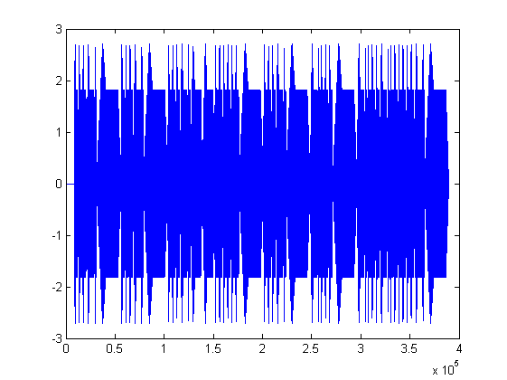
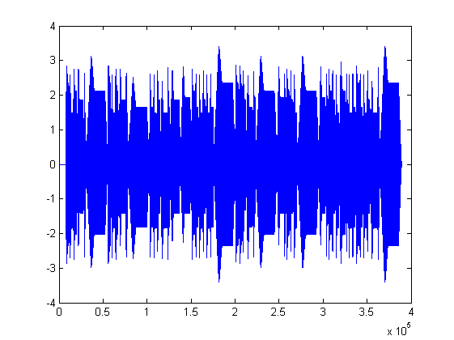
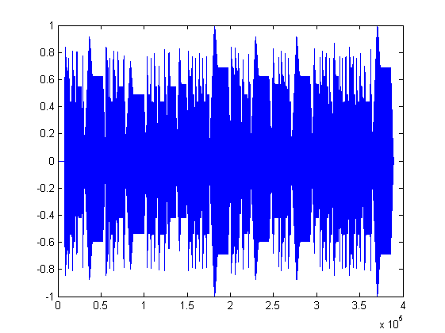

[nota,b,c]=textread('notalar.txt','%s %s %s'); %Notalar.txt dosyası okutuldu. Okunan her sütun bir değere atandı. fs=8192;%örnekleme sayısı değişkene atandı. ds=round(fs/100); %durma süresi hesaplandı go=round(fs/10); %gecikme süresi hesaplandı notalar=zeros(1,fs); %örnekleme süresi kadar sıfırdan olusan bir dizi oluşturuldu a=zeros(1,length(notalar)); %notalar matrisi boyutlarında sıfırdan olusan bir dizi olusturuldu durak=zeros(1,ds); %durma süresi boyutunda sıfırdan olusan bir dizi olusturuldu oktav=str2num(cell2mat(b)); %dosyadan cell olarak okunan degiskenler double degere dönüştürüldü.
for i=1:(length(nota)) %nota dizisi boyu kadar döngü oluturuldu vurus((i),1)=str2num(cell2mat(c(i,1))); %dosyadan cell olarak okunan degişkenler double degere dönüştürüldü frekans((i),1)=frek(nota((i),1),oktav((i),1)); %geçen hafta oluşturulan frek fonksiyonu çağırıldı [x,t]=note(frekans((i),1),vurus((i),1)); %geçen hafta oluşturduğumuz note fonksiyonu çağrıldı notalar=[notalar durak x]; %note fonsiyonunun döndürdüğü sinyal degeri aralarına daha önce olusturulmus durak dizisi de yerleştirilerek birleştirildi end %for sonu plot(notalar)
notalarecho=zeros(1,(length(notalar))); %notalar matrisi boyutlarında sıfırdan olusan bir dizi olusturuldu for i=1:(length(notalar)) %notalar dizisi boyu kadar döngü oluturuldu f=(go+i); %echo oluşturmak için gerekli olan gecikme süresi döngüye sokuldu if f<(length(notalar)) %gecikme süresi notalar matrisinin boyutunu geçmesin diye sart saglandı notalarecho(i)=notalar(i)*0.3+notalar(f); %değerlerin yüzde 30 u alınarak gecikme süresi hesaplandı else notalarecho(i)=notalar(i)*0.3+0; end end plot(notalarecho)
normalizenotalarecho=zeros(1,(length(notalar)));%normalizasyon değişkeni tanımlandı. normalizenotalarecho=notalarecho/max(abs(notalarecho));%sinyalin tepe değerleri 1'e normalize edilmiştir. plot(normalizenotalarecho) sound(normalizenotalarecho) %sinyal döndürüldü